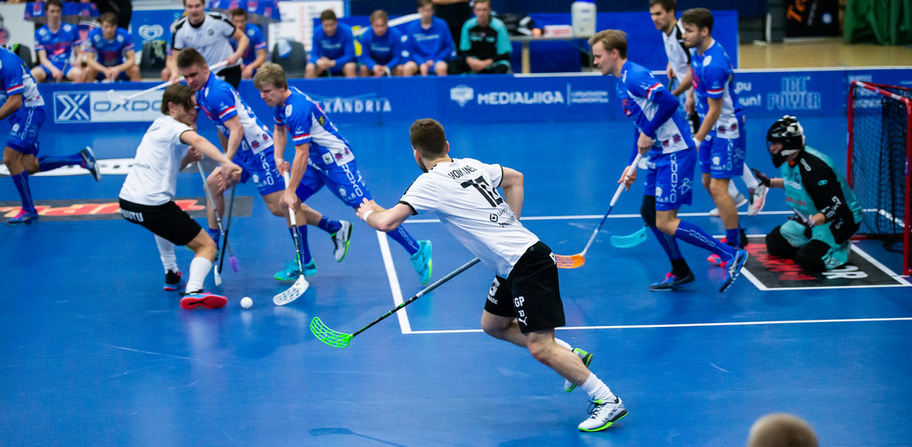

Floorball
Players contesting for the possession of the ball.
What is Floorball?
Perfect for beginners, Floorball is a fun indoor sport where teams of five players use lightweight sticks to score goals with a plastic ball. It’s easy to learn and great for all ages!
History of Floorball
Floorball originated in Sweden in the 1960s and has grown into a global sport, with international championships held regularly.
Key Facts for New Players
- Played on a 40x20 meter court with a 50 cm rink.
- Uses a light ball (23g) and sticks (half your height).
- No tackling, but shoulder contact is allowed.
How to Play
Played with a stick and a light ball, Floorball is typically a 5-on-5 game with a goalkeeper, focusing on fast-paced action and teamwork.
Get Involved
Join the Floorball community today! Whether you're a player, fan, or just curious, there are plenty of ways to get started.